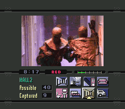
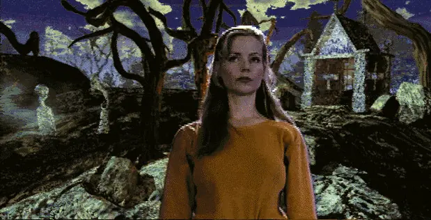
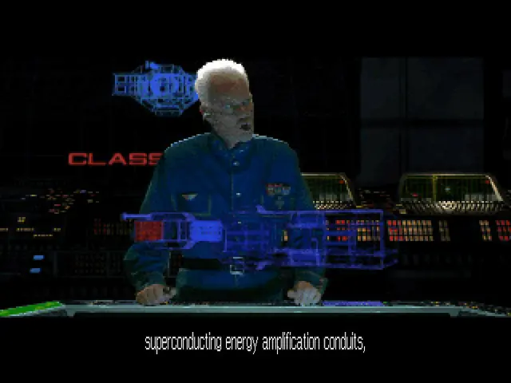
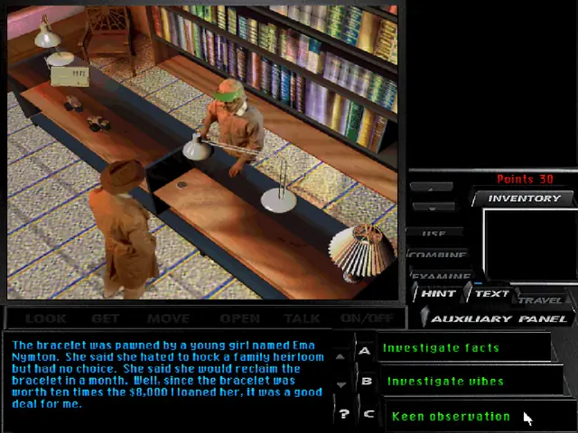
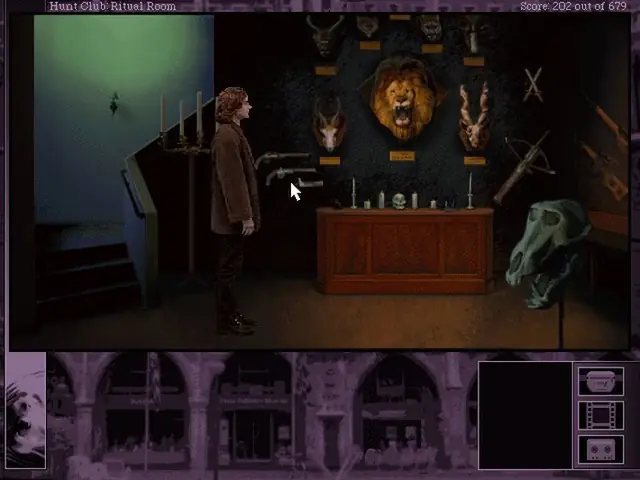
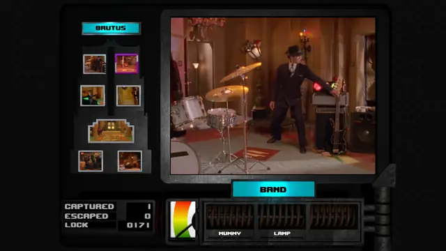
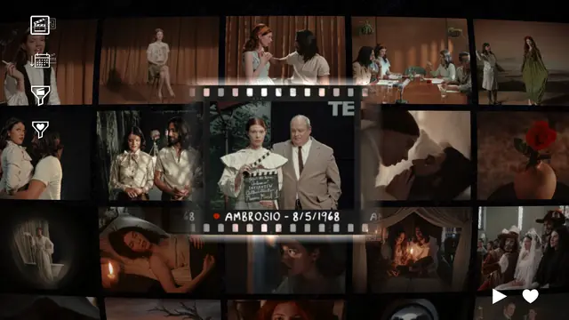
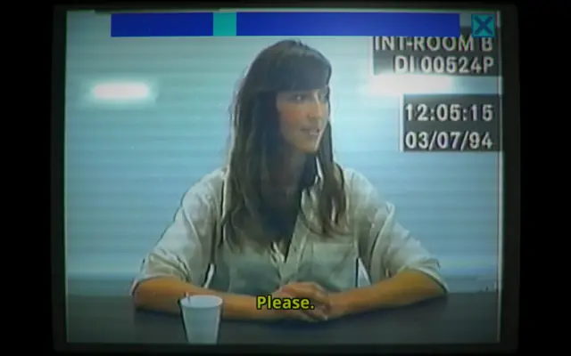
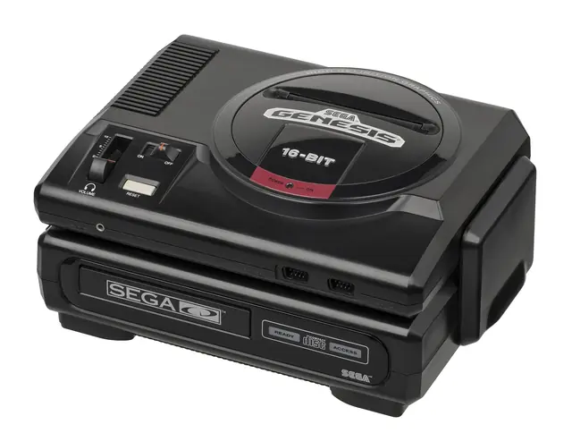

The feel
Full motion video games are built around real actors: taped, digitised and laid over computer graphics, then shipped on CD-ROM.1,2 The video is small and coarse, usually a quarter of the screen at 15 frames a second with chunky pixels,3 and the interface around it often takes up much of the screen.4
The makers meant it: Trilobyte made The 7th Guest out of earnest passion, hoping to break new ground.5 From about 1993 to 1996, live actors looked like the inevitable future of games,2 and real faces carried character-driven stories that sprites could not.1 The limits now shape the mood: in The Beast Within, the hazy photographed backgrounds add to the atmosphere, and the lead's visible discomfort suits a New Orleans man lost in southern Germany.6
- late-night
- over-lit
- earnest
- compressed
- multi-disc
- campy
- direct-to-camera
Where it comes from
Kinoautomat let an Expo 67 audience vote on what happened next,7 and the laser disc arcade games Dragon's Lair (1983) and Mad Dog McCree (1990) had players act in time with pre-made footage.4 Night Trap was shot in 16 days in 1987 for Hasbro's VHS-based NEMO console, which was cancelled, and came out on the Sega CD in 1992; a 1993 US Senate hearing made it notorious and led to the ESRB ratings in 1994.8,1 With CD-ROM's room for video, FMV games such as The 7th Guest, Wing Commander III and Phantasmagoria spread from about 1993 and had almost vanished by 1997.1 Sam Barlow returned to the form with Her Story (2015) and IMMORTALITY (2022).9,10
Core elements
Chroma-keyed live actors
Recorded video of live actors is the genre's defining trait.1 Most games of the era chroma-keyed them over computer-generated backgrounds, and the join usually showed.5 Wing Commander III built no sets at all: its cast played to an empty stage in front of a green screen.2
Small video window in a large interface
Slow single-speed CD-ROM drives forced video down to low resolutions, so games wrapped it in interfaces that took up much of the screen.4 The frame hid how small the video was and carried the rest of the game, such as Night Trap's camera switcher.4
Visible compression artefacts
The standard was a quarter-screen 320 by 240 at 15 frames a second, and Cinepak, the most common codec, left obvious, chunky pixels and faded colour.3 On 8-bit displays Cinepak looked "grainy and badly solarized",11 and many DOS games drew only every second line of the video.12
Locked-off camera staging
Keying meant the camera could not swoop or soar, so scenes were blocked like theatre played to a lens.6 Performances run to long pauses and visible discomfort,2 from casts Rob Fulop describes as on their way up or down the Hollywood ladder.8
Video selection as gameplay
Play is mostly choosing what to watch and when: cycling Night Trap's cameras to spring traps in narrow time windows,4 picking a branch when a scene pauses mid-action,1 or typing words into Her Story's police database.9
Multi-disc releases and star billing
The format was part of the show. Phantasmagoria came on seven CDs, and Sierra trumpeted its $4 million budget in its advertising.13 Most FMV games cast recognisable actors and put their names and faces in the marketing.1
How to do it
Film for low-bitrate compression
Use a tripod and light the scene well.3 Avoid zooms and pans, which change every pixel in every frame, and busy textures such as leaves, grass and running water.3 Capture at twice the resolution you will deliver and at 30 fps, even if you will deliver 10 or 15.3
Film against a green or blue screen
Film the actors in front of a uniform green or blue backdrop; after digitising, every pixel of that colour becomes transparent.5 Lock the camera off so the inserted background stays coherent, and keep the key colour out of the costumes.6,5 It can be cheap: The 7th Guest's cast was shot in two days on a stage covered in green butcher paper.5
Build the background sets
Model the set in 3D and render it, as Trilobyte did for The 7th Guest at 640 by 480,5 or photograph real places under overcast skies and retouch the photos, as Sierra did for The Beast Within.6 Key out the backdrop and correct the colour it spills onto the actors; a wider, softer edge keeps more detail but can leave a halo,14 and a visible join was normal in games of the era.5
Compress to 320 by 240 at 15 fps
Scale to 320 by 240 at 15 fps, Cinepak's sweet spot at about 180 KB a second from a 2x CD-ROM.3 Cinepak can still be encoded today. Set its quality factor (lower is better, higher gives a lower bitrate) and the longest gap between keyframes.15 For the 256-colour look, give each clip its own palette, as Smacker did.16
Frame the video with the interface
Let the interface take a large share of the screen: it hides how small the video is and carries the gameplay, as Night Trap's camera console does.4 For black lines, draw only every second line of the video, as many DOS games did.12 Letterboxing, which The 7th Guest used for its rendered mansion, cuts the pixels you have to move.5
Script every branch first
Once it is shot you cannot insert a scene or change when an actor enters, so design the whole game as a script before filming.8 Start each scene on a neutral emotion,6 and keep costumes fixed so clips can be mixed, as Phantasmagoria's leads wore the same clothes all game.13 Expect to shoot far more than you use: Wing Commander III cut 200 hours of footage to about three.2
Key and play clips in real time
Play each clip at its own resolution, so a 320 by 240 clip stays small inside your interface.17 To key footage live, use a chroma key shader that discards pixels within 0.1 of the key colour and fades the next 0.1.17
Cheat sheet
Do
- Lock the camera off and stage each scene like a play, so the backgrounds added later stay coherent.6
- Light the scene well, use a tripod and keep as many pixels as possible identical from frame to frame.3
- Start each clip on a neutral emotion, since the player can arrive from any other scene.6
- Give the video a reason to be video, such as surveillance cameras or a police database. Sam Barlow thinks the FMV games that worked were the ones that acknowledged it was video.9
- Cast people who will enjoy it. Under a Killing Moon's largely amateur cast carries the game on sheer likeability.19
Avoid
- Costumes near the key colour. Sierra's costumer ruled out anything blue, white that reflects blue, bluish green, and sometimes wrinkled black.6
- Zooms, pans, fades and dissolves. They change every pixel in every frame, and fades and dissolves are the hardest transitions for a codec.3
- Adding tape grain or static before compression. Noise uses up the bytes the codec needs for the picture.3
- Hiding behind irony. Night Trap's "it's supposed to be terrible" attitude mostly comes across as a cheap excuse.18
- Clips the player can't stop. A multimedia trade magazine later faulted The 7th Guest because its video clips, once triggered, could not be interrupted.5
Tools and tutorials
- FFmpeg codecs
Its Cinepak encoder still writes files for Windows 3.1 and vintage Mac OS.15
- Blender Keying node
Key out a green or blue screen and remove the colour spill before compositing actors over a set.14
- Unity Video Player
Play clips onto a RenderTexture inside your own interface frame.
- Twine
Map every scene and choice before you shoot a single take.
- Playing videos
Video playback in an engine, with a chroma key shader you can copy.17
Palette
Sampled from Her Story's desktop, Night Trap's camera console, Wing Commander III and Phantasmagoria.
Feel the vibe
In motion
Listen
The theme from Night Trap, the game a 1993 US Senate hearing made notorious.18
YouTubeFrom Phantasmagoria, Roberta Williams's turn from family games to an attempt at claustrophobic horror.13
YouTubeFrom Wing Commander III, which cast Mark Hamill and Malcolm McDowell on a $4 million budget.2
YouTubeFrom The Beast Within, whose antagonist leads a mysterious big-game hunting club.6
YouTubeFrom Command & Conquer, which told its story in full-motion video between missions.7
YouTubeFrom IMMORTALITY, where you scrub through footage and click on actors or props to jump between clips.10
YouTube
More references









Games
- Night Trap
Eight cameras in one house, and a console built around switching between them.18,4
- The 7th Guest
Filmed actors play ghosts over pre-rendered rooms, with flicker and trails to excuse the join. The mansion was built and rendered in Autodesk's 3D Studio at 640 by 480.5
- Wing Commander III: Heart of the Tiger
A cast led by Mark Hamill on an empty green-screen stage, with the sets added by computer artists.2
- Tex Murphy: Under a Killing Moon
A free-roaming 3D world, with blue-screen actors in its cut scenes and menu-driven conversations.19
- Phantasmagoria
Seven CDs of horror shot on blue screen.13,1 Study how the actors sit in its 3D-modelled rooms.6
- The Beast Within: A Gabriel Knight Mystery
Actors keyed over retouched photographs of Munich, Bayreuth and Neuschwanstein.6
- Her Story
Type keywords into a 1990s police computer to find interview clips from a 1994 case.9
- IMMORTALITY
Three lost films you move through by clicking on actors or props in the frame.10
Film, art and more
- Kinoautomat
The first interactive movie, shown at Expo 67, where the audience pressed buttons to vote on what happened next.7
- Control-Vision (NEMO)
Hasbro's VHS-based console, cancelled before launch, which Night Trap was first filmed for.8
- Sega CD
Sega's CD drive for the Genesis, a console that could show just 61 colours at a time from a palette of 512.18
- Cinepak
In 1997 the most widely used video codec, with noticeable, chunky pixels.3
- Black Mirror: Bandersnatch
Compare how a streaming film asks for choices with the way 1990s FMV games did.
Sources
- 1Hollywood envy: Adopting film production and storytelling in the FMV games of the 1990s
- 2Wing Commander III
- 3Optimizing Video for CD-ROM
- 4Choose Your Path Quickly: The Many Crossroads of the Interactive Movie
- 5The (7th) Guest's New Clothes
- 6The Beast Within: A Gabriel Knight Mystery
- 7A Full-Motion-Video Consulting Detective
- 8Feature: The Making Of Night Trap, The World's Most Famous Video Game Nasty
- 9Inside Her Story: The Indie Mystery Game That People Can’t Stop Analyzing
- 10How the "magic" of Immortality was informed, but not defined, by film technique
- 11SIGGRAPH 95 Course Notes CD-ROM: Advice on QuickTime and MPEG
- 12Special features: FMV deinterlacer
- 13Making Sierra Pay
- 14Keying Node
- 15FFmpeg Codecs Documentation: Cinepak
- 16Smacker Video Technology
- 17Playing videos
- 18The Ratings Game, Part 1: A Likely and an Unlikely Suspect
- 19Under a Killing Moon